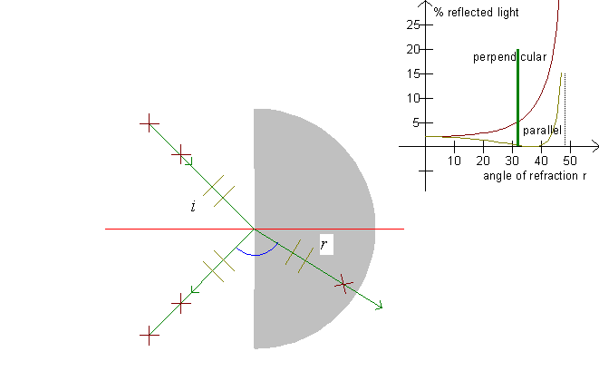
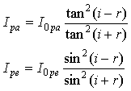
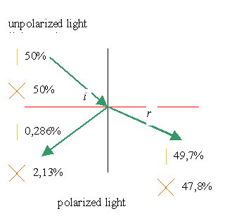
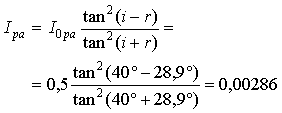
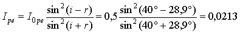
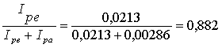
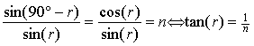
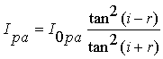
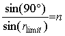

See also Polarization of the rainbow

When a ray falls on a refracting surface, it is refracted and reflected. The amounts of refracted and reflected light depend on the polarization of the light. Light is an electromagnetic wave which has the electric field oscillating orthogonally to the direction of propagation. »Orthogonally« is a lot of directions. (For instance, consider the propeller of a plane - it can point in many directions.)
Light which has the electric field oscillating in the plane of the incident sunray and the refracted ray is said to have parallel polarization. Light which has the electric field oscillating perpendicularly to this direction is perpendicularly polarized. On the illustration, parallel polarization is shown with two light gray parallel lines and perpendicular polarization is shown with two dark brown crosses.
It can be shown that the intensity of a reflected ray is

where I0pa signifies the
intensity of the incoming light of parallel polarization, and I0pa
signifies the intensity of the incoming light of perpendicular
polarization.
The graphs for these functions are drawn in the upper right
corner of the screen. Notice that Ipa and Ipe
are shown as a function of the angle of refraction r. Also
notice, that for i + r = 90°, Ipa = 0 as tan(i
+ r) diverges to infinity as i + r approaches
90°.
Example
A sunray is refracted from air into water. The angle of incidence is i = 40°. With a refractive index of n =1.33, the angle of refraction becomes r = 28,9°.

We choose I0pa = 0.5 and I0pe = 0.5, whereupon Ipa og Ipe are calculated. On the above figure, a line marks Ipa and a cross marks Ipe.

Ipe is calculated analogously:

As all light is either refracted or reflected, the intensities Ipa og Ipe of the refracted ray become
Ipa = 0,5 - 0,00286 = 0,497 and Ipe = 0,5 - 0,0213 = 0,478.
We see that the main portion of the light is refraction, and that particularly the reflected light is polarized, as

If the ray is moving in the opposite direction, part of the light will be reflected in the water, but the calculations are identical to the above calculations!
Brewster's angle:
When i + r = 90°, we have i = 90° - r, and if we insert this in the law of refraction:
we get

This angle of refraction is called Brewster's angle. At Brewster's angle, all light of parallel polarization vanishes, as the denominator diverges to infinity in the expression

The limiting angle is determined through

.
The equation is true for r < rlimit only. If the angle of refraction is greater than the limiting angle, all light is reflected. (Ipa = I0pa and Ipe = I0pe)
Exercise 4
What is the angle between the reflected ray and the refracted ray when no light of parallel polarization is reflected?
Notice that the light's electric field make the electrons of the water molecules oscillate, and these oscillations are the cause of the reflected light.
Where is a parallel oscillation across the refracted ray aimed relative to the reflected ray when no light of parallel polarization is reflected?
The same question for perpendicular polarization.